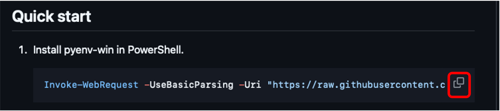

pyenvによるPython環境構築(旧版・備忘録)
授業資料をuvに移行するにあたり,旧版のpyenv導入手順をアンインストール用の備忘録として記録したものです.
pyenvによるPython環境構築(旧版)
本記事は,授業資料(特別講義DS等)で使用していた pyenv によるPython環境構築の手順を記録したものです.
授業では pyenv から uv への移行を進めており,この手順は今後の授業では使用しません. 過去にこの手順で環境構築を行った学生が,pyenv環境を削除して新しい環境に移行する際の備忘録として残しています.
新しい環境構築手順については,最新の授業資料を参照してください.
前提
Windowsを所有している学生を想定し,Windowsを前提に説明しています. それ以外のOSの方は分からなければ教員に聞いて下さい.
Pythonの環境構築にはいくつかの手法がありますが,ここでは pyenv を利用した方法を説明します. pyenv はPythonのバージョンをディレクトリごとに管理できるツールです.
現状の開発環境の削除
Terminalを開いて, python --versionと入力しましょう. すでにpython が入っている場合は,Pythonのversion情報が表示されます.
> python --version
Python 3.11.9Pythonがインストールされていない場合は以下のような表示になります.
> python --version
fha : The term 'python' is not recognized as the name of a cmdlet, function, script file, or operable program. Check the s
pelling of the name, or if a path was included, verify that the path is correct and try again.
At line:1 char:1Python の version情報が表示された場合は, pyenv --version と入力してすでにpyenvが入っていないか確認してください.
> pyenv --version
pyenv 3.1.1pyenv の version情報が表示されている場合はすでに環境構築が済んでいるので飛ばしてください. pyenvのversion情報が表示されない人はまず現行のPythonを削除しましょう.
設定 > アプリ > インストールされているアプリから pythonを検索して, Python X.X の形式のアプリと,Python Luncherなどをアンインストールしてください.
その他, anacondaなどが入っていたらアンインストールしておいてください.


アンインストールが終わったら,terminal を一度開き直して, python --version コマンドで確認してみましょう.
(VSCodeなどTerminalにアクセスするアプリを開いている場合は,閉じておきましょう.)
pyenvのインストール
続いて pyenv for windowsを参考にpyenv環境を構築します.
Terminal を再度開き以下のコマンドをコピー,貼り付けしてEnterを押してください.
Set-ExecutionPolicy -ExecutionPolicy RemoteSigned -Scope CurrentUserQuick start 内のコマンドをコピーしてTerminalに貼り付け,Enterを押してください.

Terminalを再起動して,pyenv --versionを入力し,version情報が表示されれば成功です.
> pyenv --version
pyenv 3.1.1Pythonのインストール
Pythonにはいくつかのversionがあり,必要に応じて切り替えて利用します.
まずはインストール可能なversionを pyenv install --listコマンドで確認してみましょう.
> pyenv install --list
:: [Info] :: Mirror: https://www.python.org/ftp/python
:: [Info] :: Mirror: https://downloads.python.org/pypy/versions.json
:: [Info] :: Mirror: https://api.github.com/repos/oracle/graalpython/releases
2.4-win32
2.4.1-win32
2.4.2-win32
.
.
.この中から一つを選んでインストールします.
最新のものをインストールするとライブラリなどが対応していない場合があるので,3.11.9あたりをインストールしておきましょう.
> pyenv install 3.11.9
:: [Info] :: Mirror: https://www.python.org/ftp/python
:: [Info] :: Mirror: https://downloads.python.org/pypy/versions.json
:: [Info] :: Mirror: https://api.github.com/repos/oracle/graalpython/releases
:: [Downloading] :: 3.11.9 ...
:: [Downloading] :: From https://www.python.org/ftp/python/3.11.9/python-3.11.9-amd64.exe
:: [Downloading] :: To C:\Users\akagi\.pyenv\pyenv-win\install_cache\python-3.11.9-amd64.exe
:: [Installing] :: 3.11.9 ...
:: [Info] :: completed! 3.11.9pyenvはディレクトリごとに使用するPythonのバージョンなどを管理できます.
現行のディレクトリのみで,特定のversionのPythonを利用したい場合は
pyenv local <使いたいPython>で設定します.
localで設定されているディレクトリ以外全てで共通のPythonを使用したい場合は
pyenv global <使いたいPython> で設定します.
今は,
pyenv global 3.11.9 で全体に3.11.9を設定しましょう.
> pyenv global 3.11.9
> python --version
Python 3.11.9python --versionで指定したversionのpythonが表示されればPythonの環境構築完了です.